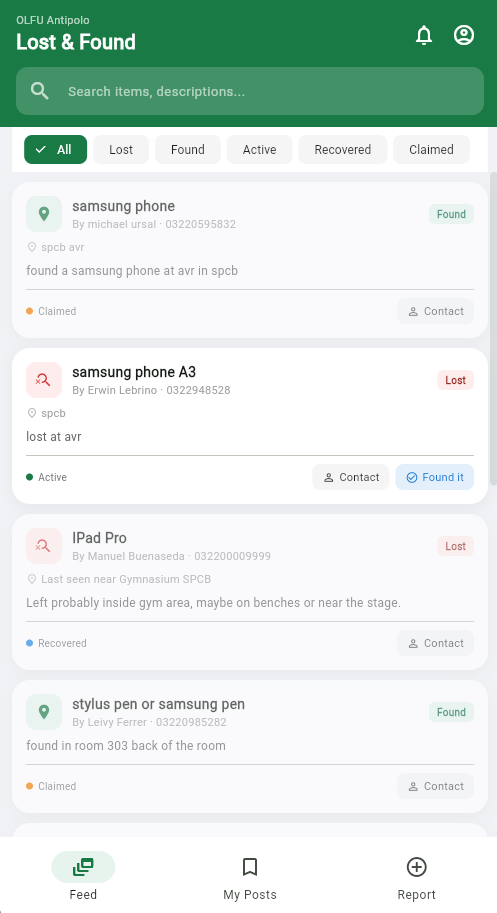
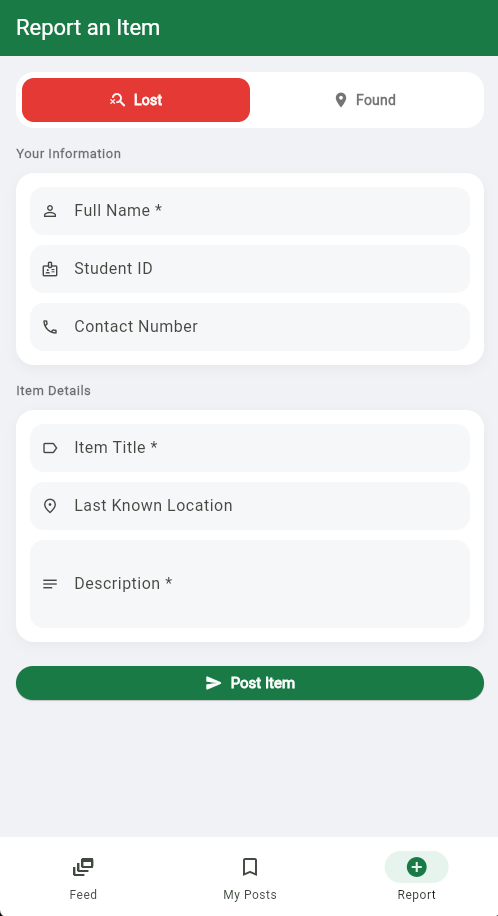
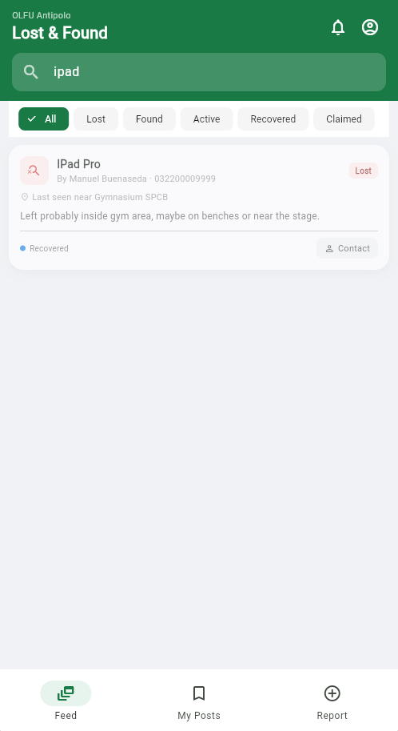

A Flutter and Firebase-powered mobile application designed to simplify reporting, browsing, and recovering lost and found items within a community.

The Lost & Found Mobile Application is an Android application developed using Flutter and Firebase to provide a centralized platform where users can report, browse, and recover lost or found items. The project demonstrates mobile application development, cloud database integration, and responsive user interface design while improving communication between users searching for lost belongings.
Traditional lost-and-found processes often rely on bulletin boards, social media posts, or verbal reports, making it difficult to organize information and increasing the chances that lost items remain unclaimed. This application provides a centralized digital platform for submitting and managing lost and found reports.
Mobile Development
Backend
Tools
The application follows Flutter's widget-based architecture while
integrating Firebase services for authentication, cloud storage, and
real-time database synchronization.
Cloud Firestore serves as the primary database for storing
lost-and-found records, while Firebase Storage manages uploaded item
images. Authentication secures user access and associates reports
with registered accounts.

